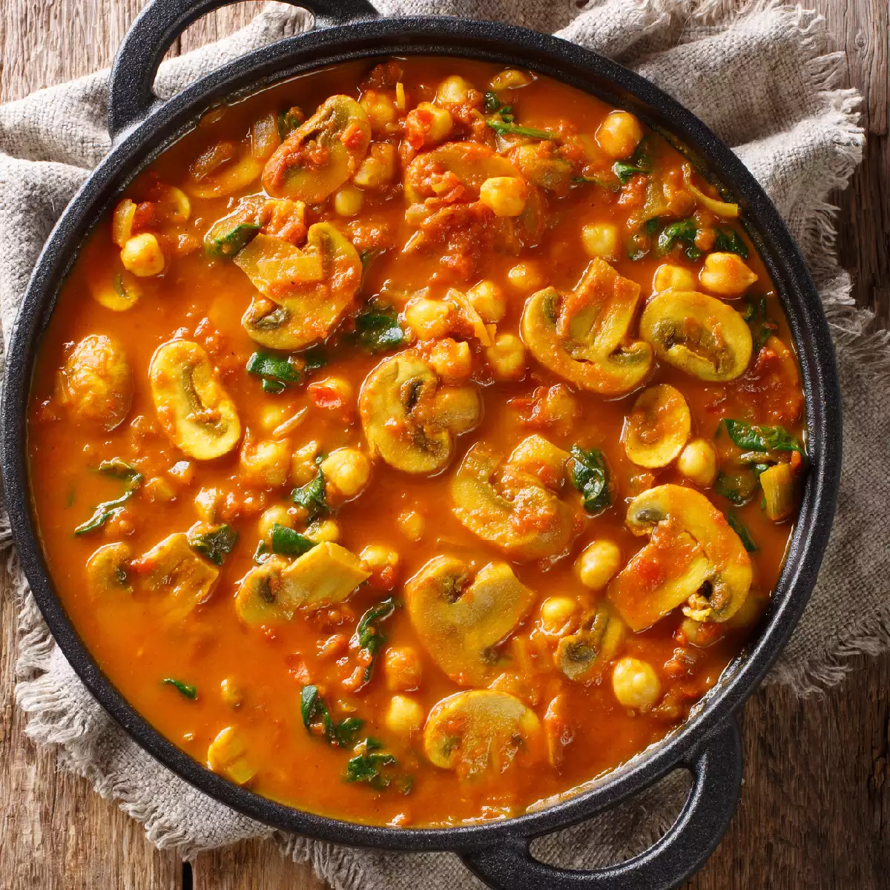

Mushroom Curry

Process:
- In a pan, heat 2 tablespoons of oil or ghee.
- Add 1 finely chopped onion and sauté until it turns golden brown.
- Add 1 tablespoon of ginger-garlic paste and sauté for a minute until fragrant.
- Add 2 chopped tomatoes and cook until they become soft.
- Add 1 teaspoon of turmeric powder, 1 teaspoon of red chili powder, 1 teaspoon of coriander powder, 1/2 teaspoon of garam masala, and salt to taste. Mix well.
- Add 200 grams of mushrooms (cleaned and sliced) and cook for 5 minutes.
- Add 1/2 cup of water and simmer for another 5 minutes until the mushrooms are tender.
- Add 1/4 cup of coconut milk and cook for a few minutes.
- Garnish with chopped coriander leaves.
- Serve hot Mushroom Curry with rice, roti, or naan.
Nutrient and Calorie Values
| Nutrient |
Value |
| Calories |
250 |
| Protein |
10g |
| Fat |
15g |
| Carbohydrates |
20g |
| Fiber |
5g |